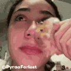

MLGGK
FLASH NEWZ
★ prehľad týždňa ★
ČO NOVÉ?
klikni a vyber si 👇
ČO NOVÉ DOMA
Klienti, konkurencia & social
ČO NOVÉ VO SVETE
Kampane, ktoré sa oplatí vidieť
ĎALEJ BY VÁS MOHLO ZAUJÍMAŤ
📅 Prehľad udalostí
↗
🏆 D&AD report
↗
MLGGK Flash Newz · tvoja pravidelná dávka inšpirácie
← späť
PREHĽAD UDALOSTÍ
BLÍŽIACE SA DÁTUMY
Sviatky a udalosti najbližšieho mesiaca
POPCULTURE NEWZ
Hudba, film, hry & internetová kultúra

DESIGN NEWS
Identity, typografia a vizuálne mňamky
← späť
🌍 ČO NOVÉ VO SVETE
made by MM
← späť
🏆 SPECIAL WEEK
made by MM
← späť
✳ POPCULTURE NEWZ
made by MM
← späť
✦ DESIGN NEWS
made by MM
← späť
▦ BLÍŽIACE SA DÁTUMY
made by MM
← späť
CHOOSE YOUR UNIT
klikni na svoj unit 👇
YELLOW UNIT
SPP · Nadácia SPP · Eurovea · Baumit
CYAN UNIT
ČSOB
BLUE UNIT
VW · VW Úžitkové · Audi · Porsche · Cupra · Seat
📱
SOCIAL UNIT
čo práve fičí na sockách
made by MM
← späť na unity
📰 CLIENT NEWS
🔥 KONKURENCIA NEWZ
made by MM
← späť na unity
📰 CLIENT NEWS
🔥 KONKURENCIA NEWZ
made by MM
← späť na unity
📰 CLIENT NEWS
🔥 KONKURENCIA NEWZ
made by MM
← späť na unity
📱 SOCIAL MEDIA TRENDS
made by MM